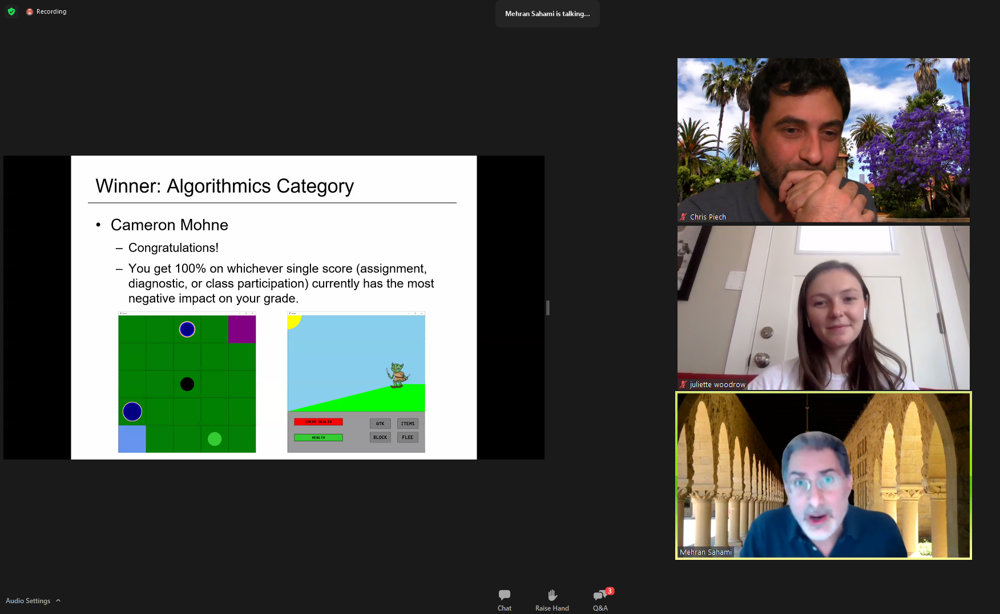
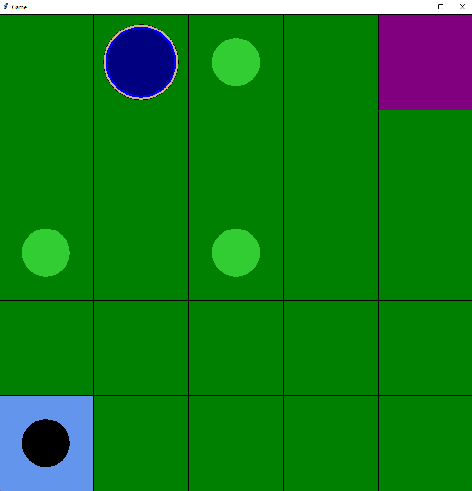
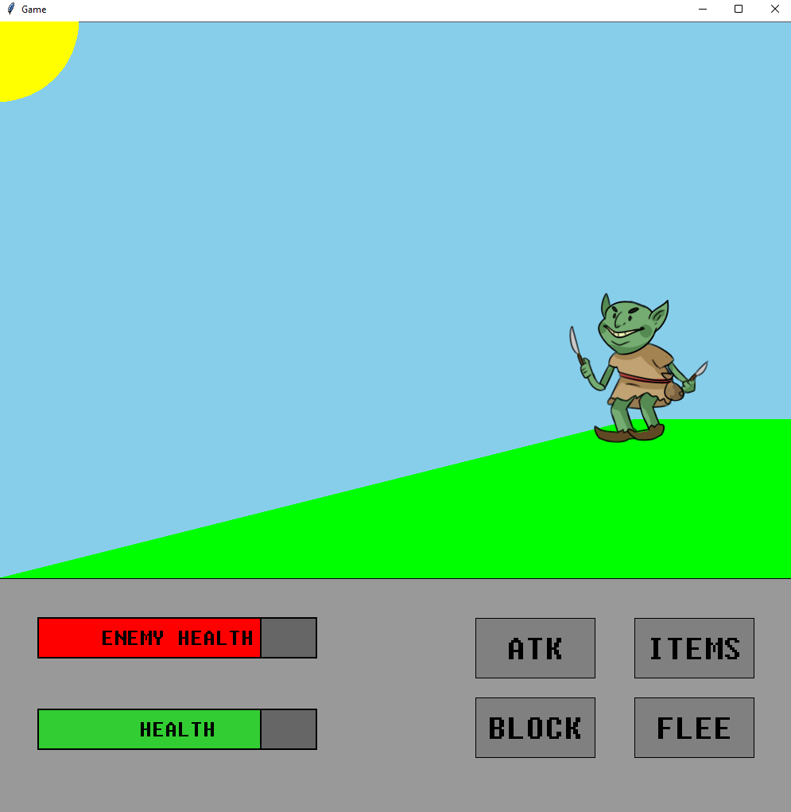
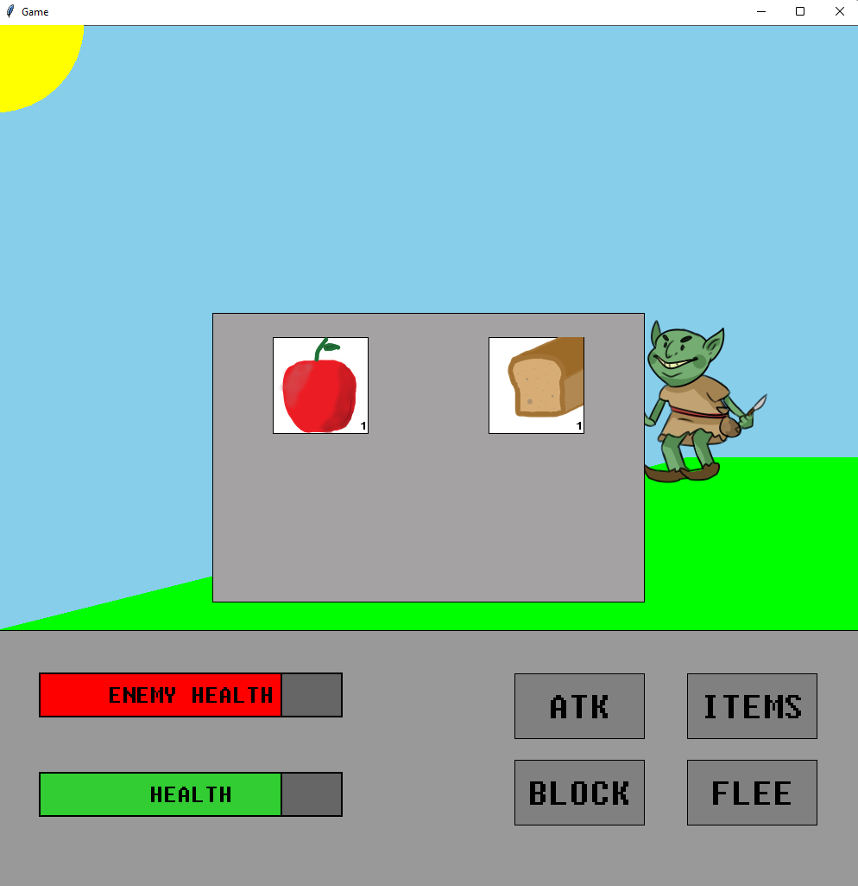
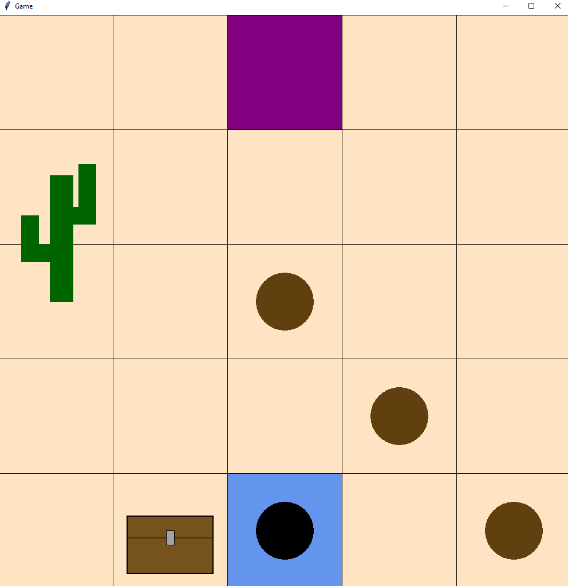
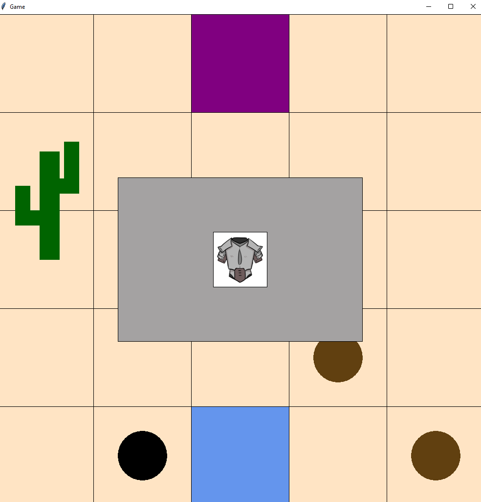
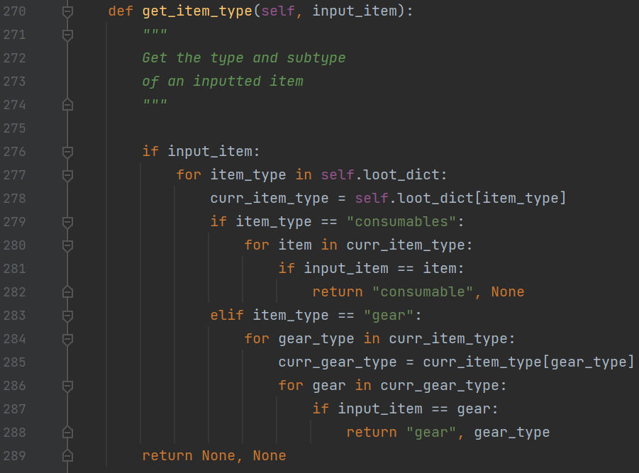
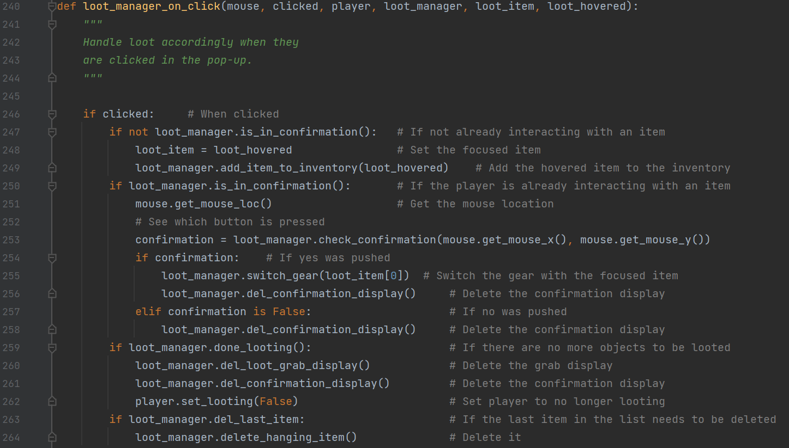

I grew up on video games, so it's only natural for me to dream of making one some day, right?
This project was an optional one. It was an entry for Stanford's CS 106A "Challenge": an open-ended project to show what you've learned. This was an intro CS course in which we had covered the basic principles, some stuff on graphics/images, and a bit of OOP. This was just enough for me to get to work.
Stanford uses their own graphics library/class which is just built off of Tkinter. This, alongside Pillow, were the only non-standard libraries I used. The provided graphics library was essentially just something that made the Tkinter canvas for us and added some QoL functionality. However, it came with a downside in which I'll explain a bit more later.
This game took me a long time to make. I think I was clocking in near full-time job hours for this project alone (while juggling other classes). It features easy map, tile, and level customization; a tutorial; randomly generated elements; a combat system; a loot and item system; score tracking; and lastly: a fake loading screen. It plays like a very cheap Pokémon and roguelike medieval RPG mash-up. But it is playable and it was made with no foundations except some 2D graphics, so I'll take it!
Besides just being a time sink, though, I ran into a lot of frustrating issues. Especially with Tkinter. For reference, I estimate I wrote over 2000 lines of code + comments. Some of these lines were solely targeting random bugs I had encountered. I was not trying to write super inefficient lines of code either. This project made me realize just how long good game development can take, and just how hard debugging a "simple" fix can be. I gained so much respect overall for game developers after my time in limbo developing something that looks and feels so simple compared to what is on the market.
Remember the issues alluded to earlier? Yeah. Let's jump into those. One major issue was actually with the graphics library Stanford handed us. It was automatically garbage collecting images because the library wasn't made to handle this sort of work and animation. I had to actually get help from Professor Piech where he suggested that I should cache my images somewhere I can use them or else the intermediary step would keep garbage collecting them. I also ran into issues with the way I overlayed elements which made the loot manager super finicky. I put in some patches and the issues randomly went away: more worrying than relieving to be honest.
Sorry that I said so much and still have so much to say! This project is one of my highlights of my time here at Stanford for some reason, so I have a deep fondness for it. But I think it's time to jump into what I used and learned from my experience, though. To be simple, I'd probably go with these:
This game is not currently published as it is nowhere near enough for my standards. I've included some more pictures below though to give you a better feel. Also, just because, I'll throw in some spaghetti code.






